General Knowledge Worksheets
960 printable General Knowledge worksheets (PDF) with answer keys: reading comprehension passages, reading trails and more – no prep, filter by grade.
960 resources
Grade
By grade: 5th Grade · 9th Grade
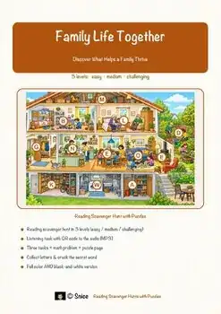
Family Life Reading Comprehension Passages | Life Skills Scavenger Hunt 5-6

La francophonie – French Reading BUNDLE | French-Speaking World Fiches
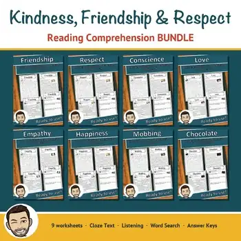
Valentine's Day & Kindness Reading BUNDLE | Friendship, Respect & SEL
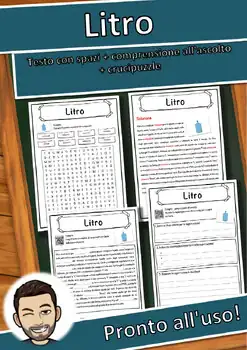
Litro – Italian Reading Comprehension Worksheet (Scheda): Cloze & Listening
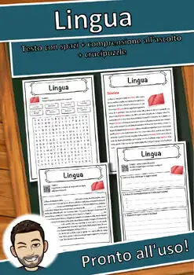
Lingua – Italian Reading Comprehension Worksheet (Scheda): Cloze & Listening
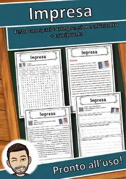
Impresa – Italian Reading Comprehension Worksheet (Scheda): Cloze & Listening
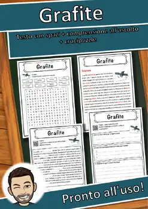
Grafite – Italian Reading Comprehension Worksheet (Scheda): Cloze & Listening
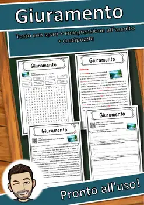
Giuramento – Italian Reading Comprehension Worksheet (Scheda): Cloze & Listening
Giudice – Italian Reading Comprehension Worksheet (Scheda): Cloze & Listening
Giornale – Italian Reading Comprehension Worksheet (Scheda): Cloze & Listening
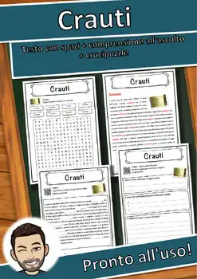
Crauti – Italian Reading Comprehension Worksheet (Scheda): Cloze & Listening
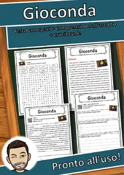
Gioconda – Italian Reading Comprehension Worksheet (Scheda): Cloze & Listening
Giocoleria – Italian Reading Comprehension Worksheet (Scheda): Cloze & Listening
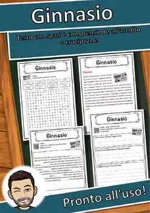
Ginnasio – Italian Reading Comprehension Worksheet (Scheda): Cloze & Listening
Gibilterra – Italian Reading Comprehension Worksheet (Scheda): Cloze & Listening
Giardino – Italian Reading Comprehension Worksheet (Scheda): Cloze & Listening
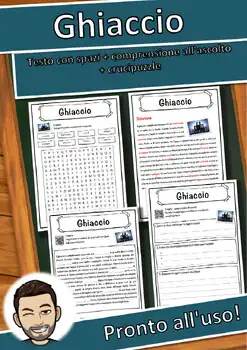
Ghiaccio – Italian Reading Comprehension Worksheet (Scheda): Cloze & Listening
Geyser – Italian Reading Comprehension Worksheet (Scheda): Cloze & Listening
Ermes – Italian Reading Comprehension Worksheet (Scheda): Cloze & Listening
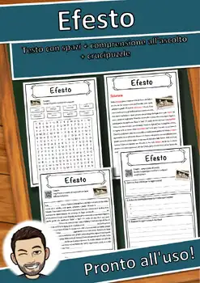
Efesto – Italian Reading Comprehension Worksheet (Scheda): Cloze & Listening
Fegato – Italian Reading Comprehension Worksheet (Scheda): Cloze & Listening
Compasso – Italian Reading Comprehension Worksheet (Scheda): Cloze & Listening
Circo – Italian Reading Comprehension Worksheet (Scheda): Cloze & Listening
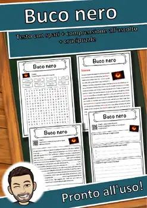
Buco nero – Italian Reading Comprehension Worksheet (Scheda): Cloze & Listening
Beat – Italian Reading Comprehension Worksheet (Scheda): Cloze & Listening
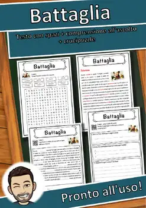
Battaglia – Italian Reading Comprehension Worksheet (Scheda): Cloze & Listening
Atena – Italian Reading Comprehension Worksheet (Scheda): Cloze & Listening

Arma – Italian Reading Comprehension Worksheet (Scheda): Cloze & Listening
Ade – Italian Reading Comprehension Worksheet (Scheda): Cloze & Listening
Germani – Italian Reading Comprehension Worksheet (Scheda): Cloze & Listening
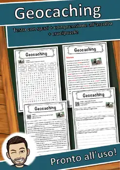
Geocaching – Italian Reading Comprehension Worksheet (Scheda): Cloze & Listening
Gemma – Italian Reading Comprehension Worksheet (Scheda): Cloze & Listening
Gemelli – Italian Reading Comprehension Worksheet (Scheda): Cloze & Listening
Gelo – Italian Reading Comprehension Worksheet (Scheda): Cloze & Listening
Paranco – Italian Reading Comprehension Worksheet (Scheda): Cloze & Listening
Parallelo – Italian Reading Comprehension Worksheet (Scheda): Cloze & Listening
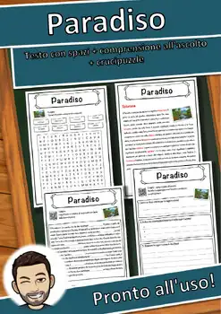
Paradiso – Italian Reading Comprehension Worksheet (Scheda): Cloze & Listening
Paracadute – Italian Reading Comprehension Worksheet (Scheda): Cloze & Listening
Pannolino – Italian Reading Comprehension Worksheet (Scheda): Cloze & Listening
Pancake – Italian Reading Comprehension Worksheet (Scheda): Cloze & Listening
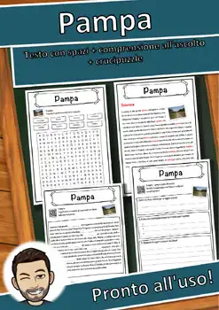
Pampa – Italian Reading Comprehension Worksheet (Scheda): Cloze & Listening
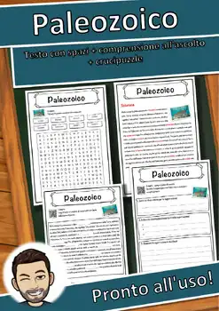
Paleozoico – Italian Reading Comprehension Worksheet (Scheda): Cloze & Listening
Neutralità – Italian Reading Comprehension Worksheet (Scheda): Cloze & Listening
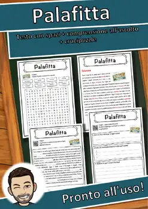
Palafitta – Italian Reading Comprehension Worksheet (Scheda): Cloze & Listening
Pagliaccio – Italian Reading Comprehension Worksheet (Scheda): Cloze & Listening
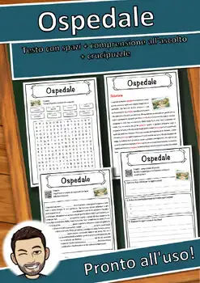
Ospedale – Italian Reading Comprehension Worksheet (Scheda): Cloze & Listening
Osmio – Italian Reading Comprehension Worksheet (Scheda): Cloze & Listening
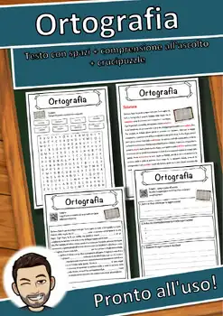
Ortografia – Italian Reading Comprehension Worksheet (Scheda): Cloze & Listening
No resources found – try a different search term or filter.